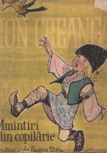
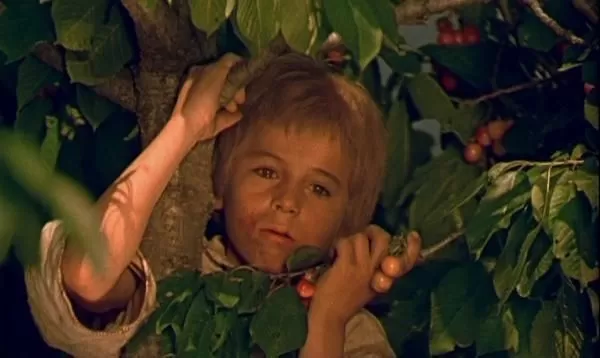
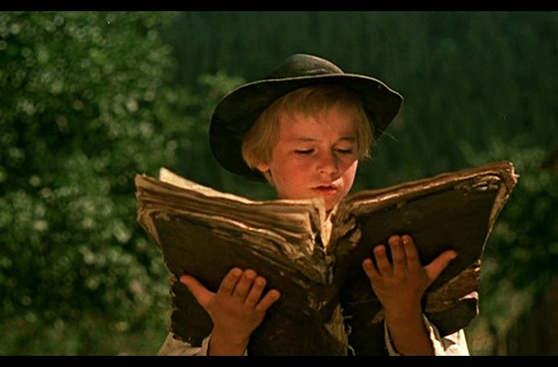
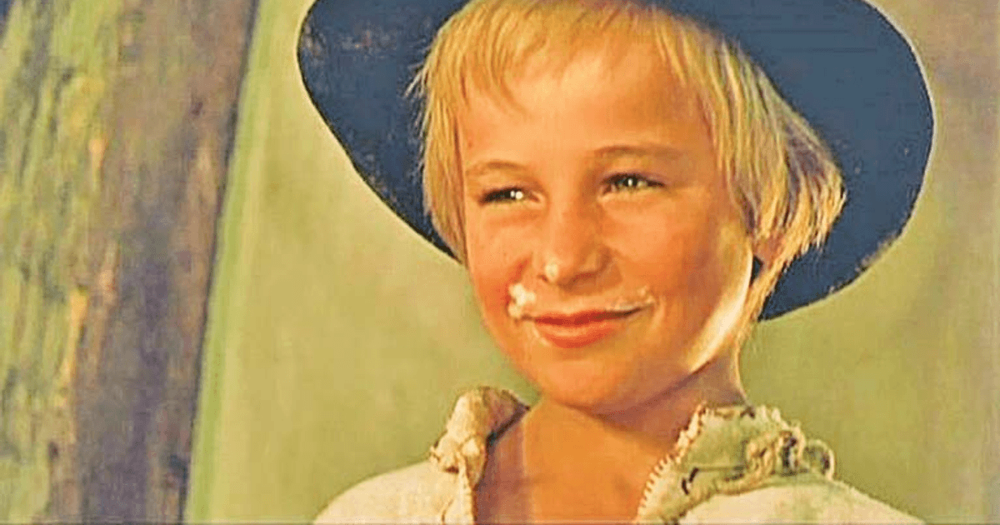

Amintiri din copilarie
I.Creanga
Informații generale | Ediția originală |
Autor | Gen |
Limba | Editura |
Tara primei apartii | Data aparitiei |
Ion Creangă | memorialistică |
română |
Editura Cartea tarii romanesti |
România |
1892 |
Rezumat pe capitole
- Capitolul 1 
- Relatarea lui Creangă începe cu un monolog extins și cu o descriere nostalgică a locului nașterii sale, cu o scurtă prezentare a istoriei Humuleștiului și a statutului social al familiei. Primul capitol se concentrează pe mai multe personaje legate direct de primii ani de școală ai lui Nică: Vasile a Ilioaei, tânărul învățător și cleric ortodox, care îl înscrie în clasa nou înființată; superiorul lui Vasile, preotul paroh; Smărăndița, fata inteligentă, dar neastâmpărată, a preotului; tatăl lui Creangă, Ștefan, și mama Smaranda. Unul dintre primele episoade prezentate în carte prezintă pedepsele corporale recomandate de preot: copiii erau puși să stea pe un scaun denumit Calul Balan și biciuiți cu Sfântul Nicolai (denumit după hramul bisericii). Fragmentul este și o relatare retrospectivă și în ton jovial a interacțiunii cu ceilalți copii, de la jocurile lor preferate (prinderea muștelor cu ceaslovul) până la iubirea copilărească a lui Nică pentru Smărăndița și la folosirea abuzivă a pedepsei corporale de către un monitor gelos.
- Capitolul 2
- Al doilea capitol începe cu un alt monolog nostalgic, la rândul său introdus prin celebrul pasaj: „Nu știu alții cum sunt, dar eu, când mă gândesc la locul nașterii mele, la Humulești, la stâlpul hornului unde lega mama o șfară cu motocei la capăt, de crăpau mâțele jucându-se cu ei, la prichiciul vetrei cel humuit, de care mă țineam când începusem a merge copăcel, la cuptorul pe care mă ascundeam, când ne jucam noi, băieții, de-a mijoarca, și la alte jocuri și jucării pline de hazul și farmecul copilăresc, parcă-mi saltă și acum inima de bucurie!” Textul continuă cu o prezentare a superstițiilor mamei, pe care le împărtășea și autorul. În urma indicațiilor Smarandei, Nică însuși crede că băieții „cu părul bălai” precum el pot invoca vremea frumoasă dacă se joacă afară când plouă, că unele pericole pot fi îndepărtate prin descântece, și că însemnarea corpului uman cu leșie sau noroi oferă protecție împotriva deochiului.
- Capitolul 3
- Prima parte a celui de-al treilea capitol al cărții continuă cu metafora „bucății de humă însuflețită”, făcând din ea punctul de pornire a unui dialog imaginar purtat de narator cu sine însuși. El oferă mai multe detalii despre istoria Humuleștiului, începând de la războiul polono-otoman din 1672–1676 și menționând pe scurt trecerea imperialilor în căutarea frumoasei prințese Natalia (evenimente la care scriitorul susține că ar fi fost el însuși martor). Această prezentare îl determină pe narator să concluzioneze că „humuleștenii nu-s târiți ca în bârlogul ursului”. Afirmația servește drept introducere la următoarea perioadă din viața lui Nică: revenirea la școală, de această dată o nou-creată instituție, înființată din ordinul Domnului Moldovei Grigore Alexandru Ghica și condusă de teologul Isaia „Popa Duhu” Teodorescu. Urmează o descriere detaliată a discursului inaugural ținut de Ghica, la care Creangă ar fi fost martor. Povestea se concentrează apoi pe Teodorescu, pe metodele sale de predare a metodelor aritmeticii, cum ar fi regula de trei simplă, și pe aparenta sa descurajare în fața unor elevi ca Nică Oșlobanu (descris de autor ca indisciplinat și egoist).
- Capitolul 4
- Al patrulea (și ultimul) capitol al Amintirilor din copilărie începe cu prezentarea îndoielilor pe care le are Creangă privind plecarea din Humulești înspre îndepărtatul Iași: „Ursul nu joacă de bună voie". Naratorul se folosește de această ocazie pentru a descrie lucrurile cele mai dragi lui în Humulești: peisajul („Ozana cea frumos curgătoare și limpede ca cristalul, în care se oglindește cu mâhnire Cetatea Neamțului de atâtea veacuri!”), familia și tovarășii, și obiceiurile locale legate de petreceri și dans. Planurile sale de a rămâne acasă sau de a se călugări sunt zădărnicite de mama sa Smaranda, care invocă reputația strămoșilor pentru a-l convinge să plece la Socola și să-și facă un nume ca preot mirean.